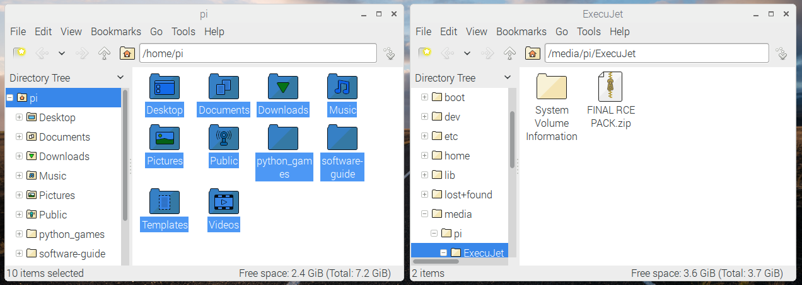
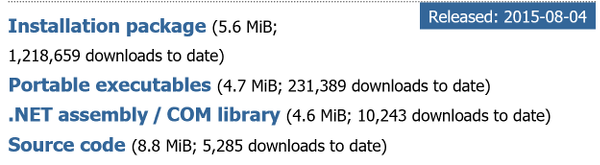
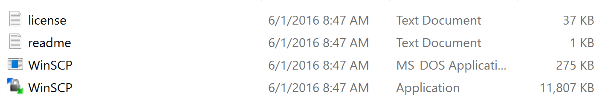
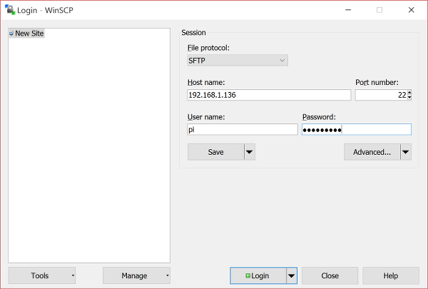
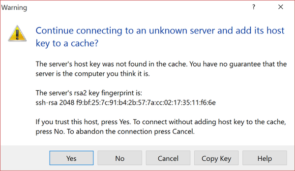
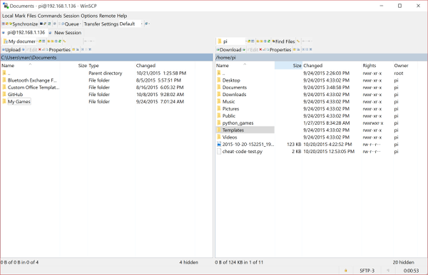

Licenca
To delo je na voljo pod pogoji slovenske licence Creative Commons 2.5:
priznanje avtorstva - nekomercialno - deljenje pod enakimi pogoji.
Celotna licenca je na voljo na spletu na naslovu http://creativecommons.org/licenses/by-nc-sa/2.5/si/. V skladu s to licenco je dovoljeno vsakemu uporabniku delo razmnoževati, distribuirati, javno priobčevati, dajati v najem in tudi predelovati, vendar samo v nekomercialne namene in ob pogoju, da navede avtorja oziroma avtorje in izdajatelja tega dela. Če uporabnik delo predela, kar pomeni, da ga spremeni, preoblikuje, prevede ali uporabi to delo v svojem delu, lahko predelavo dela ponudi na voljo le pod pogoji, ki so enaki pogojem iz te licence oziroma pod enako licenco.

Varnostna kopija kartice SD
Zelo verjetno je, da vse pomembne datoteke shranjuješ v mapo na kartici SD, imenovano /home/pi. Ta e-učbenik predvideva, da je to mapa, kamor shranjuješ svoje datoteke. Če so datoteke v kakšni drugi mapi na kartici SD, jih boš morda moral/-a kopirati v mapo /home/pi.
Varnostno kopiranje z odstranljivim pomnilnikom
Če imaš ključ USB ali zunanji trdi disk z dovolj prostora za shranjevanje, je to najlažji način za varnostno kopiranje datotek.
- Vstavi pogon USB v enega od vhodov USB in Malina ga bo takoj samodejno zaznala.

- Odpri pogon USB v Upravitelju datotek (angl. File Manager).
- Uporabi Upravitelja datotek, da odpreš še eno okno in ga postaviš vzporedno s prvim oknom.
 - Sedaj lahko kopiraš vsebino mape
/home/pina pogon USB tako, da jo povlečeš v drugo okno.
Če datotek in map ne moreš kopirati iz enega v drugo okno to najbrž pomeni, da uporabljaš pogon USB, ki je bil formatiran za uporabo z Mac OS X. Poizkusi formatrati pogon USB z datotečnim sistemom FAT32, z Mac-ovim programom Disk Utility.
Varnostno kopiranje preko omrežja
Če želiš kopirati datoteke preko omrežja, potrebuješ Malinin naslov IP.
- Zaženi Malino, ki mora biti priključena na omrežje in nato odpri okno terminala.
- V terminalu vnesi ukaz:
hostname -I
- Izpisal se bo Malinin naslov IP.
Navodila za Linux in Mac
- Poskrbi, da je računalnik z operacijskim sistemom Linux ali Mac povezan v isto omrežje kot Malina. Nato odpri okno terminala.
- V terminalu vnesi spodnji ukaz, pri katerem nadomestiš
192.168.1.136z naslovm IP tvoje Maline:rsync -av --exclude".*/" pi@192.168.1.136:/home/pi/ ~/RPi-backup
- Če pogledaš v domačo mapo na svojem Linuxu ali Macu, bi moral videti mapo, imenovano
RPi-backup, ki vsebuje vse tvoje datoteke z Maline.
Navodila za Windows
- Poskrbi, da je računalnik z operacijskim sistemom Windows povezan v isto omrežje kot Malina.
- Če želiš kopirati datoteke preko omrežja na računalnik z operacijskim sistemom Windows, boš moral/-a namestiti program WinSCP.
- Pojdi na spletno stran prenosov programa WinSCP.
- Prenesi prenosno izvedljivo datoteko (angl. portable executable), ki bo shranjena v zip datoteki. Nato zip datoteko razširi.
 - V mapi kamor si razširil/-a program WinSCP, si oglej naslednje datoteke. Dvo-klikni aplikacijo WinSCP (ne aplikacije MS-DOS):
 - V prijavnem oknu v ustrezna polja vpiši Malinin naslov IP, uporabniško ime in geslo:
 - Pojavilo se bo opozorilo, ki bo spraševalo, ali zaupate računalniku ali ne. Kliknite gumb Yes:
 - Naslednji zaslon ti omogoča prenos datotek med računalnikom in Malino tako, da datoteke povlečeš in spustiš iz enega podokna v drugo:

Varnostno kopiranje z dostopom do kartice SD na Linuxu
Če na svojem računalniku uporabljaš operacijski sistem Linux, lahko datoteke kopiraš neposredno s kartice SD.
- Zaustavi Malino, odstrani kartico mikro SD in jo vstavi v adapter katice SD. Nato ta adapter vstavi v svoj računalnik.
- Spodnja zaslonska slika prikazuje kartico SD, ki je vstavljena/priklopljena v računalnik z operacijskim sistemom Ubuntu (Linux).

- Datoteke bodo v mapi
home/pi, zato dvoklikni mapohomein kopiraj celotno mapopina svoj računalnik: